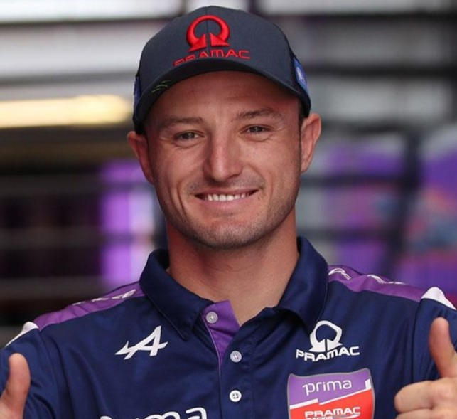

Estás en: Inicio >> Piloto
Jack Miller
Jack Miller debutó en carreras de ruta en 2009, tras comenzar su carrera en tierra, y poco después debutó en el Campeonato Mundial de 125cc. Alzándose con el título de 125cc en su camino hacia la competición a tiempo completo a nivel mundial, Miller impresionó por primera vez en 2013, cuando demostró ser un piloto líder constante con el Racing Team Germany. En 2014, Miller se quedó a las puertas del título con el Red Bull KTM Ajo, donde Alex Márquez estuvo a punto de ganar, antes de dar el increíble salto de Moto3™ a MotoGP™ en 2015.
Tras una difícil temporada como debutante, Miller consiguió su primera victoria en 2016 en el TT Circuit Assen, a pesar de una temporada que comenzó con una fractura de pierna y que posteriormente se vio interrumpida por otra lesión.Con un buen número de resultados entre los diez primeros, Miller permaneció en el equipo Estrella Galicia 0,0 Marc VDS en 2017 e impresionó una vez más antes de fichar por Pramac en 2018 y cambiar de Honda a Ducati.
Su paso al equipo oficial fue merecido y cumplió en 2021: dos victorias, tres podios más y un cuarto puesto en el Campeonato Mundial. Miller volvió a demostrar su calidad en 2022 con siete podios, incluyendo la mejor actuación de su carrera en MotoGP™, al ganar con facilidad en Japón. Tras cinco años de rojo, Miller se vistió con el naranja de KTM, y la temporada comenzó con fuerza con un doble podio en el GP de España. En el GP de Alemania consiguió otro podio al sprint, pero la segunda mitad de la temporada fue discreta.
Multimedia sobre Jack Miller

Entrevista a Jack Miller
Datos sobre el piloto
- Fecha de nacimiento : 18/01/1995
- Lugar de nacimiento: Townsville
- Altura : 173 cm
- Peso : 64 kg
- Moto utilizada : Yamaha
- Dorsal : 43
Equipos en los que estuvo el piloto:
- Honda 2015 - 2017
- Ducati 2018 - 2022
- KTM 2023 - 2024
- Yamaha 2025
Estadísticas del piloto
| Datos/Temporada | Puntos obtenidos | Clasificación | Poles | Victorias | Podios |
|---|---|---|---|---|---|
| 2024 | 87 | 14 | 0 | 0 | 0 |